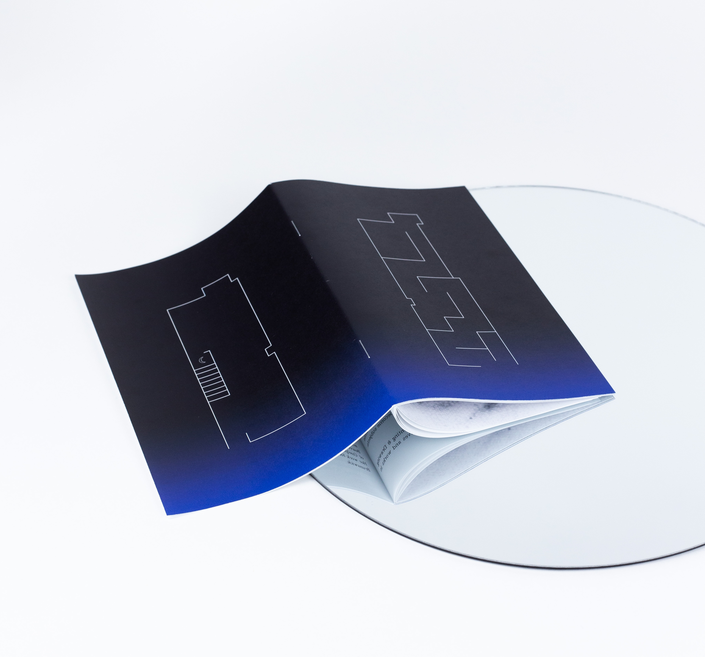
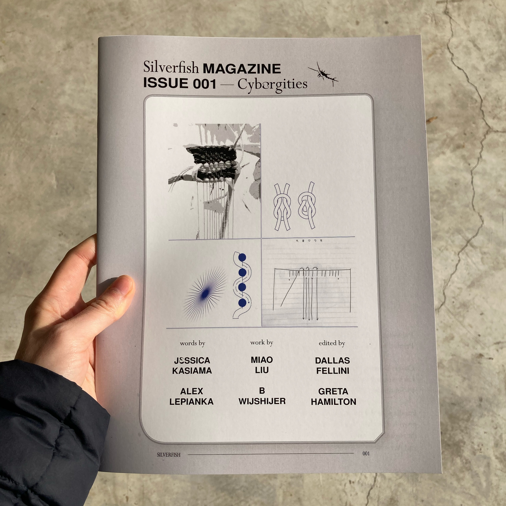

To purchase multiples, get in touch at hearthgarage@gmail.com or DM us on instagram at @hearth.garage. Payment can be sent via e-transfer to hearthgarage@gmail.com. Local pick up can be coordinated in Toronto to avoid shipping fees.
| HEARTH005 |  |
City Water Broadside: Winter 2021
Shadow Land Acknowledgment words by Cody Caetano x visuals by Yan Wen Chang "The idea and conceptual site of the Shadow Land comes from writer and traditional teacher Lee Maracle (Sto:lo), who in the past has taught it as “the space between the living and the dead where terrible things can be looked at.”
B&W prints of this edition are available for free/by donation, while the edition of 20 originals is for sale for $45 each. For inquiries please contact hearthgarage@gmail.com. All proceeds from this broadside will go to Encampment Support Network Toronto. |
| HEARTH004 |  | Moonshow Publication
Our latest publication features a collection of poetry and prose along the themes of dreams, night, and moonlit experiences by Alexia, Benjamin de Boer, Forest Hope, Jennifer Laiwint, Keivan Mahboubi, and Blair Swann. Produced alongside the exhibition Moonshow, a collaborative project by Hearth and the plumb, they are available for 15$ (plus shipping if applicable). |
| HEARTH003
[SOLD OUT] |
 | Silverfish Issue 001 Cyborgities [SOLD OUT]
ft. work by Jessica Kasiama, Alex Lepianka, Miao Liu, and B Wijshijer |
| HEARTH002 |  |
HEARTH002: Sound Diary Cassette
Produced in conjunction with the exhibition stem to where we grew stuck
|
| HEARTH001 |  
|
Sentient Sun Publication
Produced in conjunction with the exhibition Sentient Sun Featuring 40 pages of writing and work by: Marina Fathalla, Lamis Haggag, Emily Harrison, Lauren Lavery, Rowan Lynch, Philip Leonard Ocampo, Mehrnaz Rohbakhsh, and Geneviève Wallen. 15$/PWYC, plus shipping
|
| HEARTH000 [SOLD OUT] | 
 |
City Water Broadside Fall 2019 [SOLD OUT]
Fan Wu x Francisco-Fernando Granados City Water is a broadside series that changes with the seasons, featuring artist-writer pairs in collaboration. For remaining copies, contact Knife Fork Books or Art Metropole. |